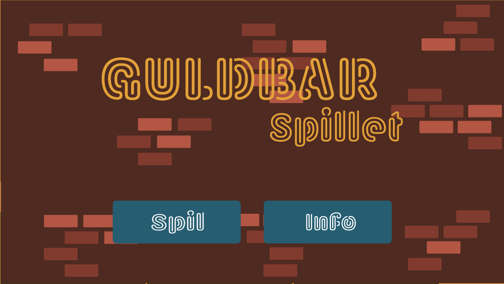
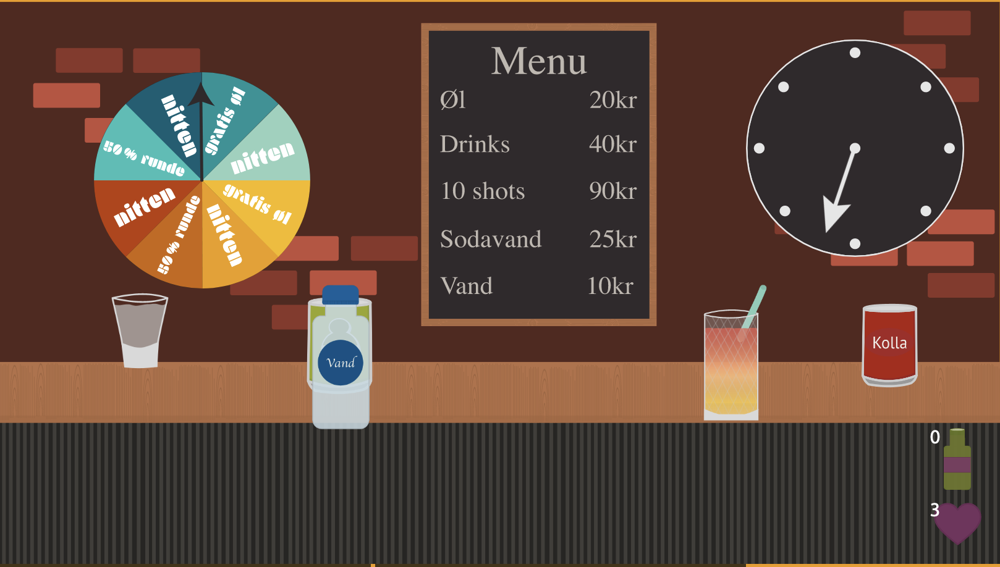
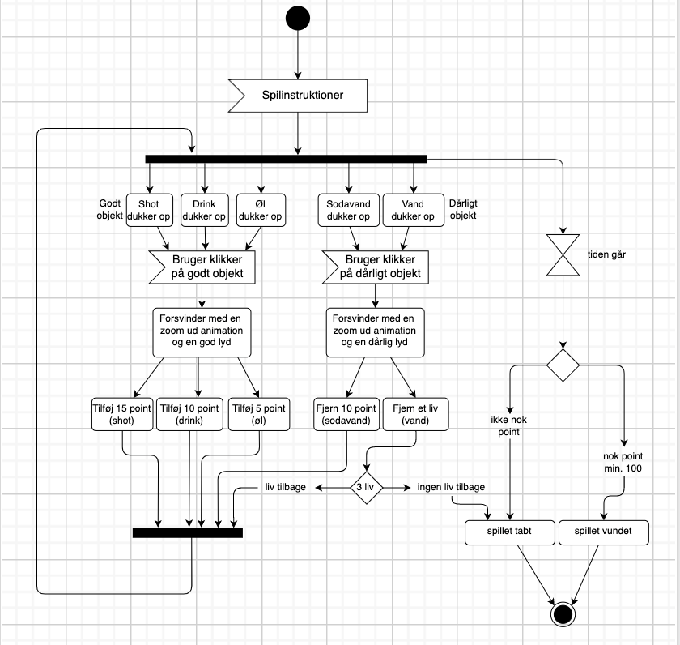
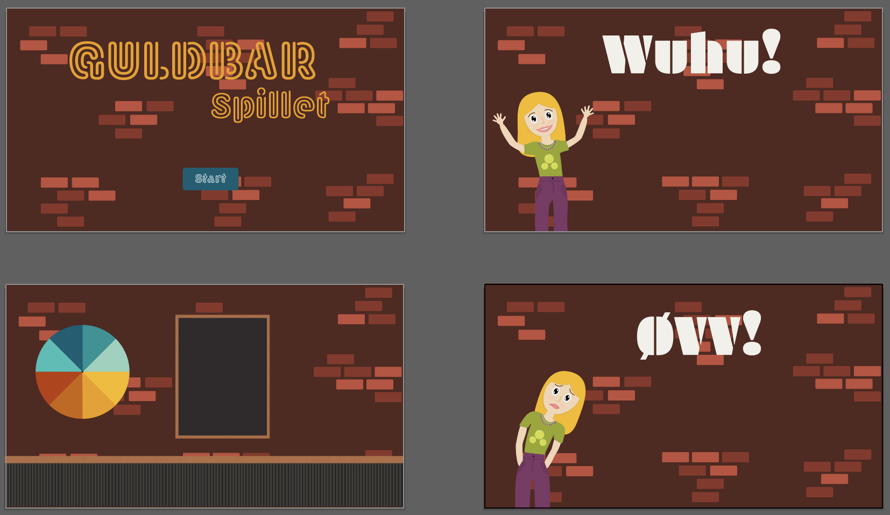

Guldbar spillet
Hjælp Benedikte med at få drukket nok til fredagscafen, så hun bliver stiv inden hun skal videre i byen, så hun ikke behøver bruge hele siden SU på alkohol i byen.

Ide
Hvordan jeg fik ideen til Guldbar spillet, mit stildugangspunkt og min pitch. Kan du læse lige her

Tenik
Hvis du er interesseret i hvordan mit spil er opbygget. Kan du se mit aktivitets diagram og state machine diagram

Grafik
Her ligger min designproces til mit spil. Det er screendumps og mine skitser.

Aseets liste
Her kan du finde en liste over mine færdige assets der indgår i mit spil. Mine skærme, elementer og lyde